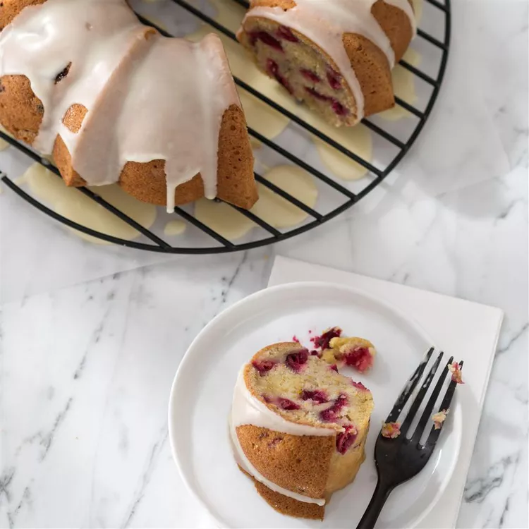

Orange Cake

Orange-Cranberry Bundt® Cake
Ingredients
- 1 cup almond milk, or other non-dairy milk
- 1 tablespoon freshly grated orange zest
- ½ cup fresh orange juice
- ⅓ cup coconut oil, melted
- ⅓ cup unsweetened applesauce
- 2 tablespoons ground flax seeds
- 1 tablespoon cornstarch
- 1 ¼ cups white sugar
- 1 tablespoon vanilla extract
- 2 ⅔ cups all-purpose flour, divided
- 1 teaspoon baking powder
- ¾ teaspoon salt
- ½ teaspoon baking soda
- 1 ½ cups fresh or frozen cranberries, halved or coarsely chopped
Directions
- Preheat oven to 350 degrees F (175 degrees C). Lightly grease a 12-cup fluted tube pan (such as Bundt®).
- Vigorously whisk together milk, zest, juice, oil, applesauce, flax seeds, and cornstarch in a large bowl. Add sugar and whisk until well combined, then whisk in vanilla.
- Use a fine mesh strainer to sift in about half of flour and all of baking powder, salt, and baking soda, then stir until well combined. Sift in remaining flour and stir until smooth. Fold in cranberries. Pour batter into prepared pan.
- Bake until top is puffed and firm to touch, cake starts to pull away from pan sides, and a wooden pick inserted near center comes out clean, 50 to 55 minutes. Cool in pan 10 minutes, then loosen cake with a small metal spatula, invert on a cooling rack, and cool completely, about 2 hours.
- Put confectioners' sugar in a large bowl. Add juice, oil, and vanilla and stir vigorously, until thick and smooth but pourable. (Thin with water or a little more juice if needed.)
- Put a sheet of wax paper under rack with cake. Drizzle glaze over cake, letting excess drip off. Let stand until set, about 15 minutes.
Back to Home